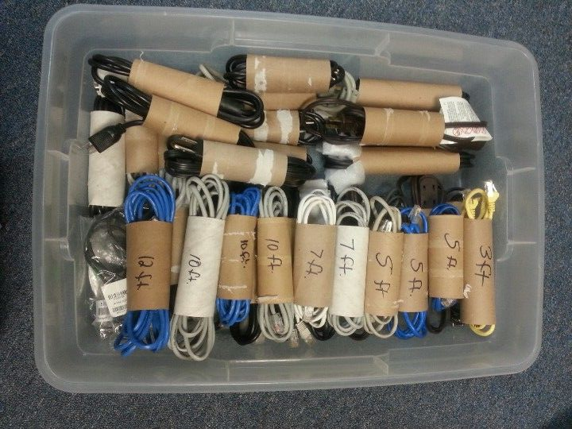

Muud lifehackid
Kasuta pikkade küünlaaluste korral
spagetti, et küünal põlema panna.
Mõõda oma käsi ja jäta see meelde,
et saaksid selle järgi lihtsasti
erinevaid asju mõõta.
Vaata, kuidas voltida korralikult
kummiga voodilina.
Keri vana pastaka vedru ümber laadija
juhtme otsa, et vältida kiiresti purunemist.
Kasuta näpitsklambreid juhtmete
organiseerimiseks.

Juhtmete hoiustamiseks ilma, et need
omavahel sassi läheks, on mõistlik need
tualettpaberi rullide sisse paigutada.
Vaata, kuidas lihtsasti T-särke
kokku voltida.
Kasuta Pringles krõpsude pakendit
spagettide hoiustamiseks.
Life hack:
Use the weekend to build the life you want instead of trying to escape the life you have.